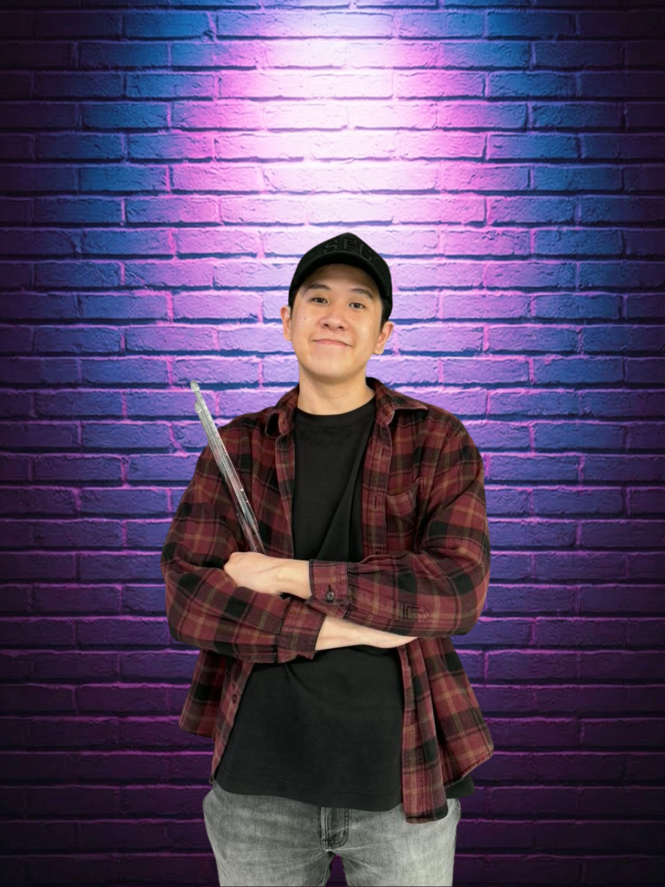

Jazz
Vocals
Biography
A Singapore-based live performance group built on energy, musicianship and connection.
Who We Are
JPAG Music is a Singapore-based live performance group bringing engaging, energetic and memorable live music experiences to audiences across the island. From busking spaces to private celebrations, school events, weddings and corporate functions, JPAG focuses on creating performances that feel personal, lively and connected to the crowd.
Our Members
A group of passionate musicians brought together by our love for music.
Vocals
Keyboard
Guitar

Vocals / Drums
Our Journey
JPAG continues to grow through live performances, public showcases and event opportunities. With every performance, the group aims to bring strong vocals, live instrumentation, audience interaction and a polished entertainment experience suitable for different occasions.
Performance Highlights
Bookings
Contact us for busking enquiries, event performances, weddings, birthdays and school events.
 Instagram: @jpagband
Instagram: @jpagband
 TikTok: @jpagband
TikTok: @jpagband